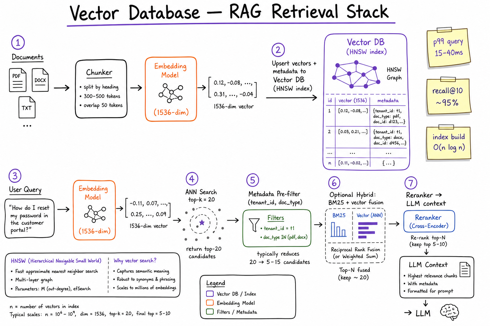
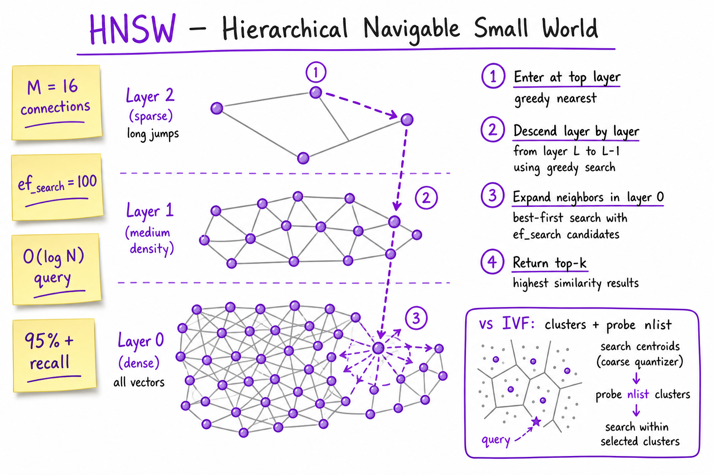
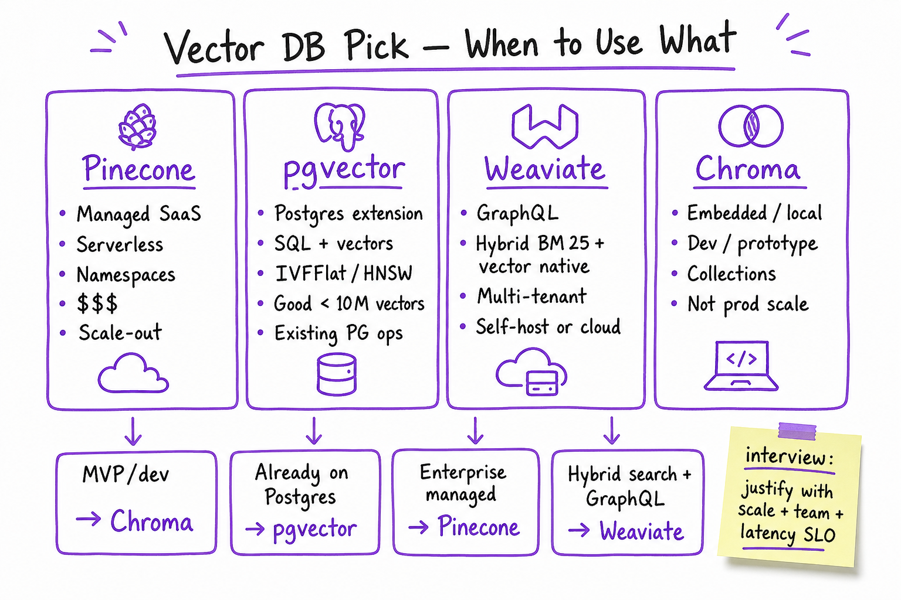

Vector Databases // AI Tech
Specialized stores for approximate nearest-neighbor (ANN) search over high-dimensional embeddings. This overview covers index algorithms (HNSW, IVF), metadata pre-filtering, hybrid BM25+vector retrieval, and how to choose between Pinecone, pgvector, Weaviate, and Chroma for your RAG stack.

End-to-end retrieval: chunk documents, embed with the same model at ingest and query time, upsert vectors + metadata into an ANN index (HNSW/IVF), apply metadata pre-filters, optionally fuse BM25 + vector scores, rerank, then pass top chunks to the LLM. Typical p99 query latency: 15–40 ms at 1–10M vectors with tuned ef_search.
01 — What & Why
A vector database stores dense embedding vectors and answers “which vectors are closest to this query vector?” in sub-linear time via approximate indexes. It is the retrieval layer in most RAG systems — not a replacement for Postgres (transactions, joins) or Elasticsearch (full-text analytics), but the right tool for semantic similarity at scale.
Functional requirements
- Upsert vectors with stable IDs, optional metadata JSON, and namespace/collection isolation
- Query by vector (and sometimes by raw text if the DB embeds server-side)
- Filter on metadata before or during ANN search (tenant, ACL, date range, doc type)
- Delete / update by ID; re-index after embedding model change
- Hybrid keyword + vector fusion when exact token matches matter (SKUs, names, error codes)
Non-functional requirements
- Latency: p99 query < 50 ms for top-k=20 at millions of vectors (with HNSW + warm index)
- Recall: ANN recall@10 ≥ 0.90 vs brute-force gold (tune
ef_search/nprobe) - Freshness: near-real-time upsert for doc updates; full re-embed on model swap
- Cost: RAM for HNSW graphs dominates; disk-backed IVF cheaper at 100M+ scale
- Multi-tenancy: namespaces, partition keys, or row-level metadata filters
Prerequisite: vectors only work if you understand embeddings & semantic search — same model, same dimension, cosine vs dot-product metric must match training.
01a — Core Concepts
| Term | Definition | Gotcha |
|---|---|---|
| Embedding | Fixed-size float vector representing semantic meaning of text/chunk. | Ingest and query must use the same model version; changing model = full re-index. |
| ANN | Approximate Nearest Neighbor — trades perfect recall for speed. | Always measure recall@k on a golden set; don’t assume default params are enough. |
| HNSW | Graph index with hierarchical layers; greedy search down layers then expand neighbors. | High RAM; best default for <50M vectors when recall matters. |
| IVF | Inverted File — k-means clusters; search only nprobe nearest centroids. | Needs training on representative data; poor clusters = bad recall. |
| Flat / brute force | Exact linear scan — baseline and small corpora. | OK for <100K vectors; does not scale. |
| Metadata | JSON fields attached to each vector (tenant_id, source, page, ACL). | Unindexed filters post-ANN waste work — use pre-filter or filtered HNSW. |
| Namespace / Collection | Logical partition of vectors (per tenant, per product, per index version). | Pinecone namespaces; Chroma collections; pgvector = table per collection often. |
| Hybrid search | Combine sparse (BM25/keyword) and dense (vector) scores. | Requires tuning weights; see hybrid search sheet (when available). |
| Distance metric | Cosine, L2, or inner product — must match how embeddings were normalized. | OpenAI ada-style: cosine; many models use normalized vectors → dot = cosine. |
| ef_search / nprobe | Query-time knobs: HNSW beam width vs IVF clusters to probe. | Higher = better recall, slower queries — profile on prod traffic shape. |
01b — API / Interface Surface
Most vector DBs expose a similar REST/gRPC/SDK contract. Examples below are representative patterns (Pinecone / Weaviate / pgvector / Chroma all map to this shape).
Upsert (ingest)
POST /vectors/upsert
{
"namespace": "tenant_acme_v2",
"vectors": [
{
"id": "doc-42-chunk-3",
"values": [0.012, -0.034, ...], // dim=1536
"metadata": {
"source": "handbook.pdf",
"page": 12,
"tenant_id": "acme",
"doc_type": "policy"
}
}
]
}
# Batch 100-500 vectors per request; backoff on 429
Query (retrieve)
POST /vectors/query
{
"namespace": "tenant_acme_v2",
"vector": query_embedding, // from same embed model
"top_k": 20,
"include_metadata": true,
"filter": {
"tenant_id": {"$eq": "acme"},
"doc_type": {"$in": ["policy", "faq"]}
}
}
# Returns ranked hits: id, score, metadata
pgvector (SQL-native)
SELECT id, content, metadata,
embedding <=> $1::vector AS distance
FROM document_chunks
WHERE tenant_id = 'acme'
AND doc_type IN ('policy', 'faq')
ORDER BY embedding <=> $1::vector
LIMIT 20;
-- Index: CREATE INDEX ON document_chunks
-- USING hnsw (embedding vector_cosine_ops);
Contract to nail in interviews: idempotent upsert by chunk ID, filter applied before returning top-k to the LLM, and scores exposed for reranker / logging. Never silently change embedding model without a new namespace.
02 — When to Use / When NOT
| Scenario | Use vector DB | Alternative |
|---|---|---|
| Semantic Q&A over docs | Yes — core of RAG retrieval | Long-context only if corpus fits in window (expensive, no citations) |
| Exact keyword / SKU lookup | Hybrid or BM25-primary | Elasticsearch / Postgres FTS alone |
| <50K chunks, single tenant | pgvector or Chroma often enough | Dedicated Pinecone cluster overkill |
| Already on Postgres, <10M vectors | pgvector + HNSW | Separate vector SaaS adds ops + cost |
| Multi-tenant SaaS, 10M+ vectors | Pinecone or Weaviate | Self-hosted Milvus/Qdrant if you have platform team |
| Local dev / notebook | Chroma embedded | Production-scale managed DB |
| Graph + hybrid + GraphQL | Weaviate | pgvector lacks native BM25 fusion |
| Strong ACID + vector in one query | pgvector | Eventual-consistency vector SaaS |
03 — Architecture
┌─────────────────┐
Documents ───────►│ Chunk + Embed │──► Vector DB (ANN index)
└─────────────────┘ │
│ top-k + metadata
User query ──────►│ Query embed │───────────┤
└─────────────────┘ ▼
┌──────────────┐
│ Reranker │──► LLM (RAG)
└──────────────┘
The vector DB is not the system of record for documents — keep source text in object storage or Postgres; store only embeddings + pointers (chunk_id, source URI) in the vector index.
04 — HNSW (Hierarchical Navigable Small World)
HNSW is the default ANN algorithm in Pinecone, pgvector, Weaviate, Qdrant, and Milvus. It builds a multi-layer graph: sparse long-range links on top layers for fast coarse navigation, dense links on layer 0 for fine-grained neighbors.
| Parameter | Meaning | Typical starting point |
|---|---|---|
| M | Max edges per node (build-time) | 16–32 (higher = better recall, more RAM) |
| ef_construction | Build-time search width | 128–256 (index build quality) |
| ef_search | Query-time beam width | 64–200 (tune for recall@k vs latency) |
- Query flow: enter at top layer → greedy walk to local minimum → drop to next layer → repeat until layer 0 → expand neighbor list → return top-k.
- Complexity: roughly O(log N) per query in practice; build is O(N log N) with high constant factor.
- When to pick: default for production RAG up to tens of millions of vectors when RAM budget exists.

HNSW search: long jumps on sparse upper layers, then dense neighbor expansion on layer 0. Increase ef_search when eval shows recall gaps on tail queries.
05 — IVF / IVFFlat
IVF (Inverted File Index) partitions the vector space into nlist clusters (k-means centroids at index build). At query time, only the nprobe closest centroids are searched — dramatically fewer distance computations than flat scan.
| Variant | How it works | Trade-off |
|---|---|---|
| IVFFlat | IVF buckets + exact scan within each probed bucket | pgvector default before HNSW; lower RAM than HNSW |
| IVF-PQ | Product quantization compresses vectors in buckets | Very large scale (100M+); recall loss from compression |
| IVF + HNSW | HNSW on bucket centroids or per-bucket graphs | Hybrid used in Milvus/Faiss for billion-scale |
Build requirements
- Train centroids on a representative sample of your embedding distribution — not random noise.
- Rule of thumb:
nlist = sqrt(N)for N vectors;nprobestart at 8–32 and increase until recall target met. - After major corpus drift (new product line, new language), retrain IVF centroids.
HNSW vs IVF interview answer: HNSW = higher RAM, simpler ops, best recall/latency for most RAG sizes. IVF = better when N is huge and RAM is constrained, but needs careful centroid training and nprobe tuning.
06 — Metadata Filtering
Production RAG rarely does pure global ANN — you filter by tenant, ACL, date, product, or document type before returning chunks to the LLM.
Filter strategies
| Strategy | How | When |
|---|---|---|
| Pre-filter | Apply metadata predicate, then ANN within eligible set | Selective filters (tenant_id) — Pinecone, Weaviate, pgvector WHERE |
| Post-filter | ANN top-k×10, then filter in app code | Risk: empty results if filter is sparse; over-fetch k |
| Partition by namespace | Separate index per tenant/model version | Strong isolation; more ops overhead |
# Pinecone-style filter DSL
filter = {
"tenant_id": {"$eq": "acme"},
"created_at": {"$gte": "2025-01-01"},
"allowed_roles": {"$in": ["employee", "manager"]}
}
# pgvector: push filter into SQL WHERE (preferred)
WHERE tenant_id = $2 AND created_at >= $3
Interview tip: post-filter with small k is a common bug — you retrieve 20 globally relevant chunks, filter to 2, miss the true answer. Fix: pre-filter, namespace per tenant, or retrieve k′ = 5×k then filter.
07 — Hybrid Search Overview
Hybrid search fuses dense vector similarity with sparse lexical matching (BM25, SPLADE, or inverted indexes). Use when users query exact IDs, error codes, or rare tokens that embeddings miss.
| Stage | What happens |
|---|---|
| 1. Dual retrieval | BM25 top-50 + vector top-50 in parallel |
| 2. Fusion | RRF: score = Σ 1/(k + rank_i) or linear: α·dense + (1-α)·sparse |
| 3. Rerank | Cross-encoder on top 20 → final 5 to LLM (+30–80 ms) |
- Weaviate has native hybrid (BM25 + vector) in one GraphQL query.
- pgvector + Postgres
tsvector/ ParadeDB / external ES for sparse leg. - Pinecone sparse-dense vectors (if enabled) or dual-index in application layer.
See also: RAG end-to-end for where hybrid fits in the full pipeline, and dedicated hybrid search when published.
08 — Pinecone vs pgvector vs Weaviate vs Chroma
| Pinecone | pgvector | Weaviate | Chroma | |
|---|---|---|---|---|
| Deployment | Fully managed SaaS (serverless pods) | Postgres extension — you run PG | Self-host or Weaviate Cloud | Embedded / local server |
| Best scale | 10M–billions, multi-tenant SaaS | <1–10M vectors per instance | 1M–100M+, hybrid-native | Dev, <1M, prototypes |
| Index | HNSW (managed tuning) | IVFFlat, HNSW (PG 16+) | HNSW + inverted BM25 | HNSW (in-process) |
| Hybrid | Sparse-dense / dual-query patterns | SQL FTS + vector (manual fusion) | Native hybrid GraphQL | Limited; mostly vector |
| Filtering | Rich metadata DSL | SQL WHERE (strongest for joins) | GraphQL where filters | Simple metadata dict |
| Ops burden | Lowest | Low if already on Postgres | Medium–high self-hosted | Lowest for local dev |
| Cost model | Per dimension + QPS ($$$ at scale) | Postgres infra you already pay | Infra + license (cloud optional) | Free embedded; not prod SLA |
When to pick what
| Pick | When |
|---|---|
| Chroma | Notebook, MVP, unit tests, <500K chunks, single developer machine |
| pgvector | Team already runs Postgres; need JOINs with users/orders; <10M vectors; strong consistency |
| Weaviate | Hybrid BM25+vector is core requirement; GraphQL API; multi-tenant modules; self-host OK |
| Pinecone | No platform team for vector ops; fast scale-out; many tenants; managed SLAs worth the cost |

Decision lens: team skills, existing Postgres, hybrid needs, scale, and latency SLO — not “which is best” in the abstract.
09 — Production & Ops
| Concern | Practice |
|---|---|
| Embedding version | Namespace per model (e.g. text-embedding-3-small_v1); blue/green re-index |
| Recall monitoring | Weekly golden-set eval: recall@5, MRR; alert if drop >5% after index param change |
| Latency | Track p50/p99 query ms, upsert batch size; warm indexes after deploy |
| Cost | RAM for HNSW ~ 4–8 bytes/dim × M factor × N; compress or IVF at 50M+ |
| Deletion | Tombstone by doc_id; periodic compact; GDPR delete must remove vectors + source |
| Security | Metadata ACL pre-filter; never rely on LLM to ignore wrong-tenant chunks |
# Python ingest pattern (generic)
from openai import OpenAI
client = OpenAI()
def embed_batch(texts: list[str]) -> list[list[float]]:
resp = client.embeddings.create(
model="text-embedding-3-small",
input=texts,
)
return [d.embedding for d in resp.data]
# Upsert in batches of 100; id = f"{doc_id}:{chunk_idx}"
# Query: same model, cosine, top_k=20, filter tenant
10 — Where It Shows Up
- Embeddings & Semantic Search — what vectors mean; metric choice; eval basics
- RAG End-to-End — chunking, retrieval, rerank, generation loop
- Pinecone · pgvector · Weaviate · Chroma — deep dives per engine
- Embedding Models — model choice drives index dimension and recall
- Rerankers — stage after vector DB in two-stage retrieval
- Chunking Strategies — garbage chunks → garbage neighbors
- HLD: Web Search Engine — inverted indexes vs ANN (conceptual parallel)
11 — Common Pitfalls
- Model mismatch: ingest with v1, query with v2 — similarity scores meaningless.
- Post-filter starvation: top-k globally then filter → 0–2 results; use pre-filter or over-fetch.
- Chunk too large/small: 4K-token chunks dilute semantics; 50-token chunks lose context.
- No eval set: tuning
ef_searchby gut feel; recall cliffs on legal/medical tail queries. - Vectors without source text: index stores embedding only; debugging and citations break.
- Ignoring hybrid: pure vector misses exact product SKUs and error codes users paste verbatim.
- One namespace for prod + staging: test upserts pollute prod retrieval.
12 — Interview Q&A
What is a vector database and how is it different from a regular database?
Explain HNSW in 60 seconds for a whiteboard.
M (edges), ef_search (beam width). Complexity ~O(log N); recall usually >95% with tuned params.When would you choose IVF over HNSW?
nprobe tuning; recall can cliff if clusters are poor. For most RAG (<50M chunks), HNSW is the simpler default with better out-of-box recall.How do metadata filters interact with ANN search?
What is hybrid search and when is it worth the complexity?
Pinecone vs pgvector — how do you decide in a system design round?
What happens when you change the embedding model?
embed_model=text-embedding-3-small.How do you measure if your vector index is good enough?
ef_search or nprobe until recall@10 ≥ 0.92, then profile p99 latency.Why not just put everything in the LLM context window?
What is Chroma good for vs dangerous for?
Cosine vs L2 vs inner product — which do you use?
vector_cosine_ops).SDE3 follow-up: design multi-tenant RAG retrieval for 10K customers and 100M chunks.
tenant_id pre-filter. Shared embedding service with rate limits. Ingest queue per tenant fairness. Index: managed Pinecone serverless or sharded Milvus; pgvector alone likely needs read replicas + shard by tenant hash at this scale. Hybrid per tenant optional. Observability: recall@k per tenant, p99 query, upsert lag. Re-index pipeline for model upgrades with blue/green namespaces. Link to RAG end-to-end for full diagram.